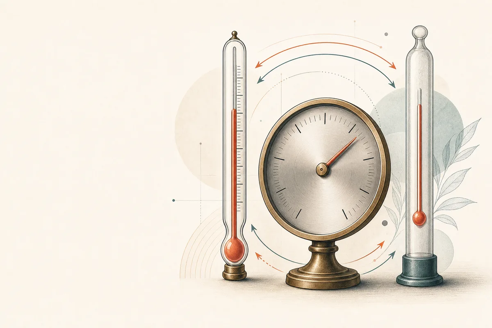

Enter a value in any scale and review the corresponding Celsius, Fahrenheit, and Kelvin results locally in your browser.

Most converters give you a single number and stop there. Toolyfi's version keeps all three scales open at once and syncs them live, so you can see Celsius, Fahrenheit, and Kelvin moving together as you type — the thermo-dial and tube fill in real time to give you an instant visual sense of "how hot is that, really."
Whether you're checking an oven setting from a US recipe, reporting a fever in the unit your doctor expects, or converting lab data for a physics assignment, the goal is the same: get an accurate number in under two seconds without hunting through ads or pop-ups.
All three scales update instantly as you type — no "Convert" button needed.
Accurate to 0.01°, useful for lab work as well as everyday checks.
A live gauge and tube fill so you can gauge intensity at a glance.
Copy all three converted values together for notes, recipes, or reports.
The page calculates the three displayed scales directly from the value you enter; avoid placing sensitive information in general web tools.
| Description | Celsius | Fahrenheit | Kelvin |
|---|---|---|---|
| Absolute Zero | −273.15°C | −459.67°F | 0 K |
| Very Cold Day | −18°C | 0°F | 255.15 K |
| Freezing Point of Water | 0°C | 32°F | 273.15 K |
| Room Temperature | 21°C | 70°F | 294.15 K |
| Body Temperature | 37°C | 98.6°F | 310.15 K |
| Hot Bath | 40°C | 104°F | 313.15 K |
| Water Boils | 100°C | 212°F | 373.15 K |
| Moderate Oven | 180°C | 356°F | 453.15 K |
| Hot Oven | 220°C | 428°F | 493.15 K |
Cooking with US recipes: Most American recipes list oven temperatures in Fahrenheit while the rest of the world bakes in Celsius. A quick check here prevents a burnt or undercooked dish. Pair it with our unit converter for cups-to-grams conversions in the same recipe.
Travel & weather: If you're checking a forecast from a US site while living in a Celsius country (or vice versa), converting the day's high and low takes the guesswork out of packing.
Health tracking: Thermometers sold in different countries use different scales. Converting a child's or your own reading against the fever threshold above helps you react appropriately without confusion.
Science & engineering: Kelvin is the SI base unit for thermodynamic calculations. Students and engineers often need to shift between lab notation (K) and everyday reporting (°C).
1. Pick any field. Click into Celsius, Fahrenheit, or Kelvin — it doesn't matter which.
2. Type your value. The other two fields, the dial, and the tube update instantly.
3. Copy or clear. Use "Copy Results" to grab all three values in one line, or "Clear" to start over.
Convert oven temps between US and metric recipes.
Physics and chemistry homework involving Kelvin conversions.
Reading a fever thermometer from another country's scale.
Understanding foreign weather reports at a glance.
Fast, precise unit shifts for experiments and reports.
Cross-checking spec sheets that mix unit systems.
A temperature converter changes the scale used to describe the same thermal state. It does not measure temperature for you. You need a reading from a thermometer, a recipe, a weather report, a specification, or a scientific source; this page then expresses that reading in Celsius, Fahrenheit, and Kelvin. The distinction is important because a calculation can be exact while the original reading is approximate, wrongly measured, or used outside the context for which it was intended.
Toolyfi keeps all three fields visible so that you can start with the scale you have and immediately inspect the other two. Enter a value in one field and the page calculates the remaining scales in the browser. The dial is a visual orientation aid, not an instrument. The input fields, labelled units, and formula relationships are the parts to review when accuracy matters.
Celsius is common in everyday weather, cooking, education, and international reporting. At standard pressure, water freezes near 0 °C and boils near 100 °C. Fahrenheit is widely used in the United States and appears in many recipes, appliance manuals, and forecasts. Kelvin is an absolute temperature scale used in science and engineering. It uses the same interval size as Celsius, but its zero point is absolute zero, so a change of 1 K is the same size as a change of 1 °C even though the displayed values differ by 273.15.
The unit symbols carry meaning. Celsius and Fahrenheit use degree signs: °C and °F. Kelvin is written K without a degree sign. Preserve that distinction when copying a result into a note, laboratory record, or technical document. A number on its own is not a complete temperature statement.
The Celsius-to-Fahrenheit relationship is °F = (°C × 9/5) + 32. To reverse it, use °C = (°F − 32) × 5/9. Celsius and Kelvin use the offset formulas K = °C + 273.15 and °C = K − 273.15. Fahrenheit to Kelvin is easiest to compute by first converting Fahrenheit to Celsius and then adding 273.15. The browser does these steps for you when you edit any one of the three fields.
For example, 20 °C becomes 68 °F because 20 multiplied by 1.8 equals 36, and 36 plus 32 equals 68. The same reading is 293.15 K. Conversely, 68 °F becomes 20 °C because subtracting 32 gives 36 and multiplying by 5/9 gives 20. Working through a familiar example once helps confirm which field is the source and which value is the result.
Recipes often create the most immediate conversion need. An oven instruction may say 350 °F while an appliance dial displays Celsius. A conversion gives you a comparable setting, but the exact heat delivered in an oven can vary. Oven calibration, fan setting, rack position, cookware, altitude, and recipe method all affect the final result. Use the converted temperature as one input alongside the recipe’s timing and the food-safety procedure appropriate to the dish.
Weather is another everyday use. A forecast of 68 °F is 20 °C; 32 °F is 0 °C; and −40 is the special point where both scales display the same number. Forecast reports describe air temperature under a specified method and location. They do not replace local warnings, heat-index information, wind conditions, or official safety guidance. Convert the unit so you can understand the report, then read the source context.
Kelvin is especially useful when a calculation depends on absolute temperature rather than a relative everyday scale. It appears in physics, chemistry, material science, lighting, astronomy, and thermodynamic formulas. A kelvin value below 0 K is not physically valid for an ordinary temperature measurement. If a source value produces a negative Kelvin result, check whether the original field was labelled correctly or whether a Celsius value was entered into the Kelvin field by mistake.
When reporting a scientific result, retain the original unit and measurement uncertainty. A converter may display two decimals, but that does not prove a source thermometer was accurate to two decimal places. Match the rounding to your measurement method and the standard required by the assignment, experiment, or document. In a technical calculation, preserve full working precision until the final presentation step where possible.
Reference points help you detect obvious mistakes. Water’s freezing and boiling points, for example, are often used as learning examples under standard atmospheric pressure. Those points can shift with pressure and dissolved substances, so they are not universal operating targets. Room temperature is also a context-dependent phrase rather than one fixed number. A stated reference is useful for orientation, but it should not be substituted for a calibrated instrument or official procedure.
The same caution applies to human, food, laboratory, equipment, and environmental readings. This converter can translate a stated number from one scale into another. It does not diagnose a condition, confirm whether food is safe, determine whether a device is within specification, or replace professional evaluation. When a temperature reading affects a health or safety decision, use the relevant validated instrument and follow appropriate professional or local guidance.
First, choose the field that matches your source. Type the number exactly as it was provided, including a minus sign when relevant. The other two fields update immediately. Second, look at the unit labels before copying the result. Third, check whether the output range is sensible for the context; a cooking temperature converted into Kelvin will be a much larger number, but it still represents the same thermal state. Fourth, use Copy Results when you need all three labelled values in a note or message.
If you want to start over, use Clear. This empties the three source/result fields and returns the dial to its visual default. It does not restore an earlier value, so keep a source record for an important reading. The tool intentionally does not create an account or store a history. That makes the page focused for quick conversion, while your own document remains the place to preserve a calculation trail.
Do not copy more precision than the source supports. If a weather app rounds to the nearest whole degree, a converted result with two decimal places is a mathematical consequence of the formula, not evidence that the weather observation was measured to one-hundredth of a degree. A recipe may reasonably use a rounded oven setting. A laboratory report may require a stated uncertainty and a defined number of significant figures. Let the final context decide how the result should appear.
Rounding too early can also create avoidable drift when a number is converted several times. Keep the original reading and the intermediate result intact during calculations, then round once at the final output. If a system requires a specific precision, follow that system’s format. The displayed values on this page are a convenient representation; they are not a universal precision recommendation.
One common mistake is applying the Celsius-to-Fahrenheit formula backward. Another is forgetting the 32-degree offset and multiplying alone. A third is writing degrees Kelvin instead of kelvin, or adding a degree sign to K. Users also sometimes enter a Fahrenheit number into the Celsius field because the displayed values are not visually distinct enough in a copied note. Check the field label before typing and preserve the unit beside every number when transferring it elsewhere.
A more subtle mistake is treating temperature difference and absolute temperature as identical in every calculation. A change of 1 °C equals a change of 1 K, but Fahrenheit intervals have a different size. Engineering and scientific problems can distinguish between an absolute reading and a temperature change. Read the problem’s notation and required formula carefully rather than converting each number mechanically.
Worked examples are valuable because they make the offset and multiplier visible. Start with 0 °C. Celsius to Fahrenheit gives (0 × 9/5) + 32, which is 32 °F. Celsius to Kelvin gives 0 + 273.15, which is 273.15 K. Start with 212 °F. Subtract 32 to get 180, multiply by 5/9 to get 100 °C, then add 273.15 to reach 373.15 K. The three outputs describe the same temperature using three different scales.
Now try −40. The Fahrenheit-to-Celsius formula gives (−40 − 32) × 5/9, which is −40. This is the point where the numerical values meet. It is a useful self-check because a calculation that does not return −40 in both fields likely has a sign, offset, or scale-selection error. For Kelvin, the same reading is 233.15 K. The value remains positive because it is above absolute zero.
These examples demonstrate arithmetic, not a recommendation for a particular environment. Do not assume that a familiar number proves a sensor or thermostat is correct. A converter can check scale relationships; it cannot calibrate the device that produced the source reading.
A temperature reading identifies a point on a scale. A temperature difference describes a change between two readings. Celsius and Kelvin intervals are the same size: an increase of 10 °C is an increase of 10 K. Fahrenheit intervals are smaller, so a change of 10 °C corresponds to a change of 18 °F. This distinction matters in scientific and engineering formulas. A direct conversion of an absolute number may require the full offset formula, while a conversion of a difference may require only the interval relationship.
When an instruction says “raise the temperature by 5 degrees,” first identify its original scale and whether it refers to a difference. Do not automatically add 273.15 to a Celsius difference. In everyday cooking and weather language, context often makes the intent clear, but technical work should state the unit and whether a value is absolute or differential.
Recipe and appliance conversions are convenient, but a displayed set point is not always the exact temperature experienced by food or material. Ovens cycle around their target, probes sit in different locations, and cookware changes how heat reaches a surface. A conversion from 350 °F to about 177 °C helps you choose the intended setting; it does not validate the appliance. Follow the recipe author, equipment manual, and any food-safety guidance that applies to the dish.
For industrial or laboratory processes, the gap between a displayed set point and an actual sample temperature can be more consequential. Use the approved instrument, calibration routine, and procedure. Document the source measurement and convert its unit only as part of the required workflow. Do not use a general browser converter as evidence that a system has reached a safe or compliant operating condition.
Weather reports can list the same conditions in different scales, but comfort and risk depend on more than air temperature. Humidity, wind, sun exposure, rainfall, altitude, clothing, activity level, and local warnings may all matter. Converting 95 °F to 35 °C can improve understanding for a reader accustomed to Celsius, yet it does not state the heat index. Converting 0 °C to 32 °F can clarify freezing conditions, yet it does not predict ice formation on a particular road.
Use converted numbers to read a source more clearly. For travel or outdoor plans, also check the official forecast, alerts, and local information. This is a unit tool, not a forecasting service, climate analysis, or emergency alert system.
The page accepts decimal values and negative Celsius or Fahrenheit readings. It calculates a corresponding Kelvin value from the formula. If you enter a Kelvin value below zero, the arithmetic may produce a value, but the input is not a physically valid absolute temperature in ordinary thermodynamics. Treat such an entry as a signal to check the source field, unit, or sign. Clear labels and a quick sanity check are often more effective than attempting to guess the user’s intention silently.
Extremely large values can also be mathematically convertible but outside the practical range of a household thermometer, weather report, or recipe. The tool does not classify a value as safe, normal, dangerous, or appropriate. It simply applies the scale relationship. That limitation keeps the calculation transparent and prevents a numeric display from pretending to be advice.
Copy Results produces a line with all three values and their units. That is useful for a worksheet, note, chat, or draft report. Before pasting, decide whether the reader needs all three scales or only the destination scale. Including unnecessary values can make a simple recipe note harder to scan, while omitting the source can make a technical record difficult to audit. Keep the unit symbol beside each number and retain the original value when someone may need to reproduce the conversion.
If the final destination requires a particular wording, form, or precision, change the presentation after checking the calculation. A browser result can supply the numbers, but the destination’s standards determine how those numbers should be recorded. For a formal document, keep a traceable source rather than relying only on copied clipboard text.
Before using a converted temperature, ask five questions. What scale was the source actually using? Did I enter it in the matching field? Do the returned values look plausible against a known reference point? Is the rounding appropriate for the source measurement? Does the final context require a calibrated instrument, a documented procedure, or professional guidance? These questions take very little time and help separate a correct calculation from an appropriate decision.
Toolyfi’s converter is intentionally focused on the first part of the workflow: translating a stated temperature across three scales. It gives you the formulas, visible labels, a browser-side calculation, and copy-ready output. The final responsibility is to connect that result to the correct source, required precision, and real-world context.
Hand checks are useful when you want to validate a copied result without rebuilding the full calculation. For Celsius to Fahrenheit, multiply by two and add thirty only as a rough mental estimate; use the exact 9/5 formula for the final value. For Fahrenheit to Celsius, subtracting thirty and halving gives a rough intuition but not an exact conversion. For Kelvin, remember the fixed 273.15 offset from Celsius. These shortcuts are for spotting a number that is obviously in the wrong range, not for replacing the page’s displayed formula.
A simple independent check is to convert the result back into the original scale. If you entered 25 °C and copied 77 °F, put 77 into the Fahrenheit field; the Celsius field should return 25.00. A round trip will not repair an incorrect source measurement, but it does catch a swapped field, omitted offset, or transcription mistake. When a document or calculation is important, retain this kind of check alongside the original source rather than relying on memory.
Use the broader Unit Converter when your task also includes length, mass, volume, area, data, time, pressure, speed, or energy. Use Scientific Calculator when a conversion feeds into an expression you need to evaluate. Use Number to Words for a readable written-number draft, and Text Trimmer when copying a result into a strict text field. Each utility solves a different part of a workflow; none substitutes for the source context or standard that governs the final decision.
Confirm that the source unit is correct, the selected field matches that source, the result carries the intended destination unit, and the rounding fits the context. If the number will be used in a safety-sensitive, legal, medical, financial, or regulated setting, confirm the calculation and the relevant procedure independently. This page provides a transparent three-scale conversion; responsible use depends on checking what the temperature means in the place where it will be used.